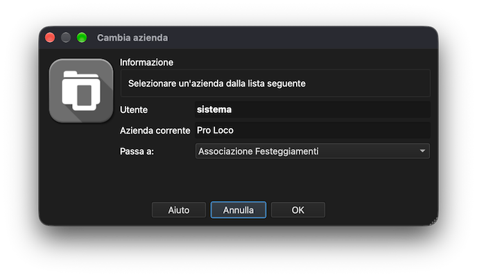

Questa finestra permette di scegliere o cambiare l'azienda in cui lavorare. Tutte le eventuali schede aperte vengono chiuse e il programma riparte con i dati e le configurazioni di menu e toolbar previste per la nuova azienda.

Vengono visualizzatii:
Selezionare su Passa a la nuova azienda, vengono visualizzate solo le aziende in cui l'utente può lavorare.